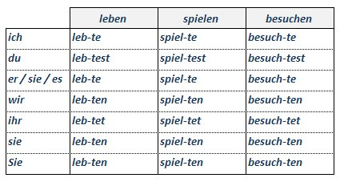
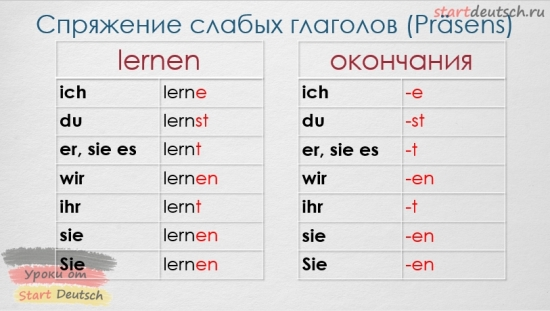

Präsens — Тепетешнее время в немецком языке
- Чтобы рассказать о том, чем вы занимаетесь вообще или сейчас, необходимо использовать глаголы в настоящем времени — презенсе (Präsens). Образуется презенс от неопределенной формы глагола, которая в немецкой грамматике называется инфинитивом.
- В инфинитиве все глаголы даны в словарях, поэтому эту форму глагола называют также словарной формой или именной.
- Окончания глаголов в свою очередь меняются в зависимости от лица, числа и времени, в котором употребляется глагол. Давайте посмотрим, как изменяется в Präsens глагол lernen:


Präsens служит для обозначения:
- 1) действия, процесса, состояния, происходящего в настоящий момент или относящегося к данному отрезку времени.
- 2) постоянно повторяющегося действия, а также действия или состояния, имеющего вневременной характер, т. е. являющегося констатацией общеизвестного факта, также в пословицах и поговорках.
- 3) действия, относящегося к будущему времени, преимущественно в разговорной речи; как правило, в предложениях такого типа есть указание на время совершения действия в будущем.